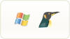

skip to content
Alternate languages
ar
العربية
ca
català
en
English
es
castellano
fr
français
ru
русский
uk
українська
vi
Tiếng Việt
More
Switch to Linux
Why not Windows
What is Linux?
Switch to Linux

From Windows to Linux
Meet GNU/Linux in everyday use.
Choose a distribution
Our selection for an easy choice.
Try or install
Install it! (it's easier than you think)